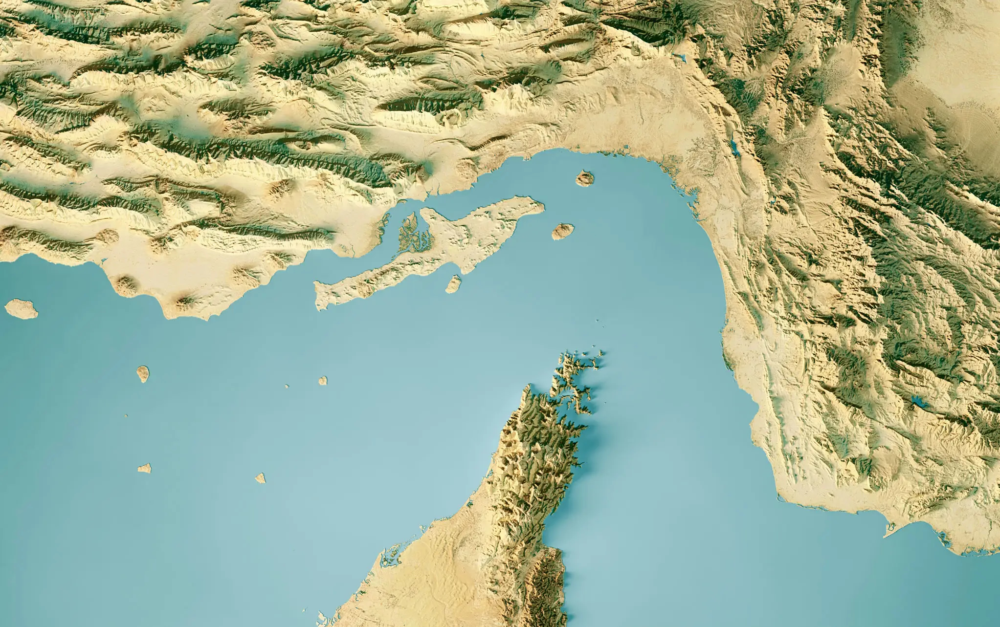

在现实中，霍尔木兹海峡的航道清理远比扫雷游戏复杂。本游戏旨在通过轻松的方式引发大家对地缘政治局势的关注。
游戏简化说明：
- 现实中的航道清理涉及复杂的国际协调、军事技术和外交谈判
- 游戏中标记为"地雷"的区域在现实中可能包含多种威胁形式
- 船只通行涉及多国海军护航、保险协调、实时情报等多种因素
- 本游戏的数据为虚构，仅供娱乐和教育目的
如需了解真实的地缘政治情况，请参考权威新闻来源和国际组织发布的官方信息。
在现实中，霍尔木兹海峡的航道清理远比扫雷游戏复杂。本游戏旨在通过轻松的方式引发大家对地缘政治局势的关注。
游戏简化说明：
如需了解真实的地缘政治情况，请参考权威新闻来源和国际组织发布的官方信息。
